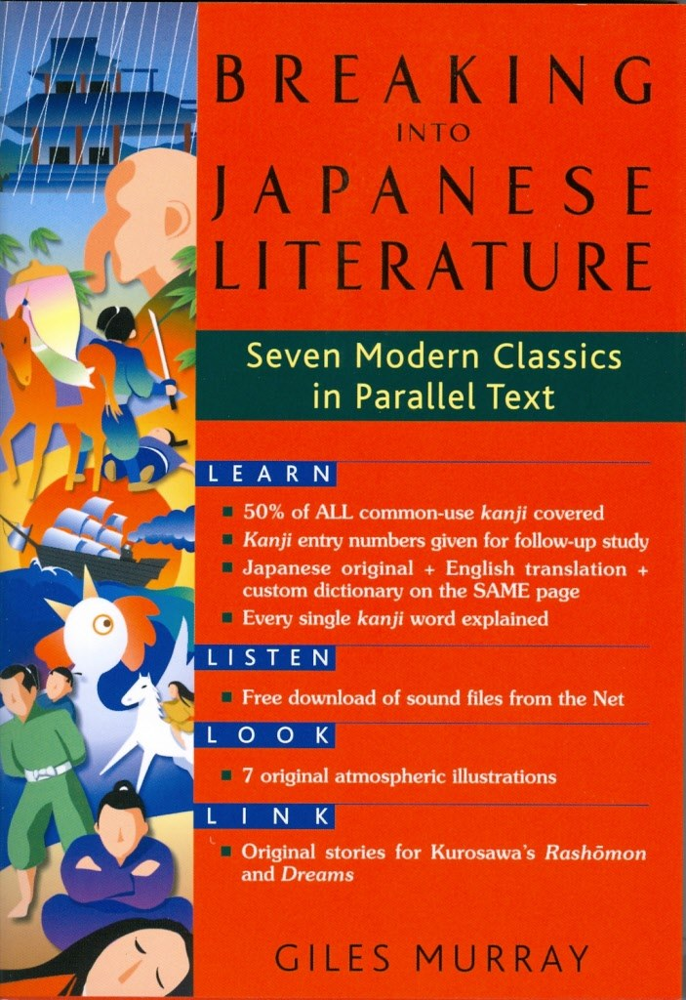

Schedule
第一週
八月 28日
八月 30日
「むかし夕日の公園で」 乙一（２００６）
第二週
九月 4日
「夜中の汽笛について、あるいは物語の効用について」 村上春樹 （1995）
九月 6日
「黙市」津島佑子（１９８２）
第三週
九月 11日
文学の用語クイズ１
「時の崖」安部公房 (1964)
九月 13日
第四週
九月 18日
「ガリバー旅行記」手塚治虫（１９６３）
九月 20日
第五週
九月 25日
文学の用語クイズ２
「憂国」三島由紀夫（１９６１）EJL
九月 27日
First self assessment due via email
死んだ三島さんへの手紙
第六週
十月 2日
「憂国」三島由紀夫（１９６１）EJL 連続
グループを作る
発表の準備
「Ｒ６２号の発明」 安部公房（１９５３）
十月 4日
死んだ三島さんへの手紙ーー音読録音ーー朗読ファイルをメール
第七週
十月 9日
文学の用語クイズ３
「雪国抄」 川端康成（１９３５）EJL
十月 11日
第八週
十月 16日
「赤い部屋」江戸川乱歩（１９２５）
十月 18日
第九週
十月 23日
文学の用語クイズ４
「赤い部屋」江戸川乱歩（１９２５）continued
「藪の中」 芥川龍之介（１９２２）BJL
十月 25日
第十週
十月 30日
「鼻」 芥川龍之介（１９１６）BJL
十一月 1日
Second self assessment due via email
第十一週
十一月 6日
「秘密」 谷崎潤一郎（１９１２）EJL
十一月 8日
第十二週
十一月 13日
「夢十夜」 夏目漱石 （１９０８）BJL
十一月 15日
THANKSGIVING
第十三週
十一月 27日
「夜のくもざる」村上春樹 （1995）
「乱れ髪」 与謝野晶子（１９０１）
十一月 29日
Third self assessment due via email
次の村上
第十四週
十二月 4日
次のくもざる
発表
十二月 6日
第十五週
十二月 11日
発表
十二月 13日
Fourth and final self assessment due via email
日程 授業計画
降順の日本近代文学史
Schedule
秋学期 2012年
第一週
第二週
第三週
第四週
第五週
第六週
第七週
第八週
第九週
第十週
第十一週
第十二週
第十三週
第十四週
第十五週
The syllabus is in flux. Check here for most recent updates. Any printout is likely already out of date.
Updated Thursday, November 13, 2014

